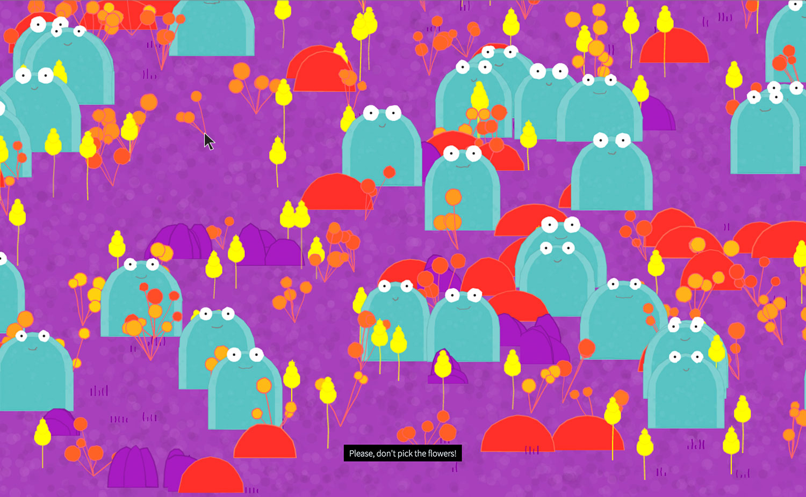
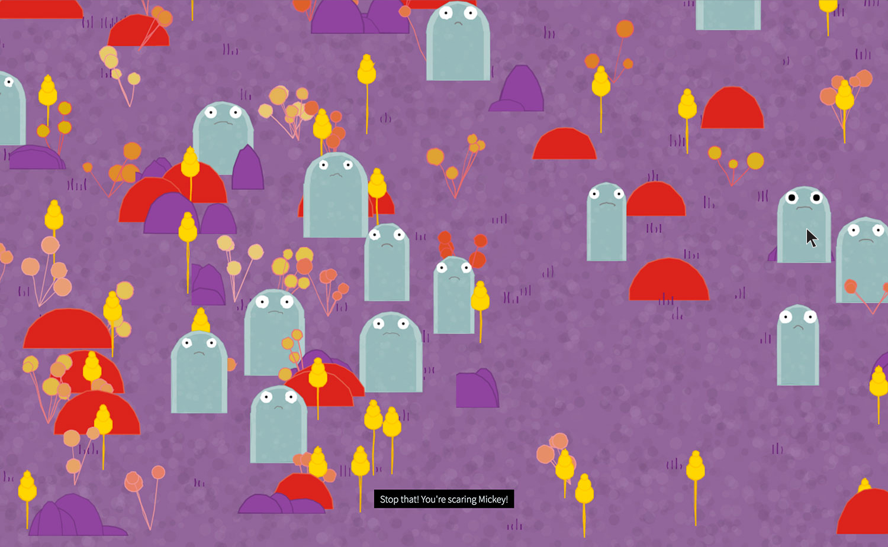
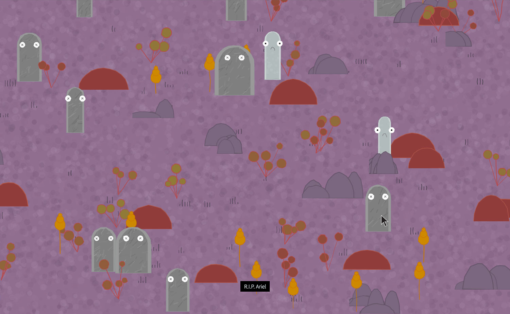

Flandill
The planet of Flandill lies approximately 149.6 million km from its star. Its climate is temperate, and its resources plentiful. Its inhabitants, called "deebs," are part of a very balanced and fragile ecosystem so exquisite people from all over lined up for a chance to visit the newly discovered world. We did not realize at first how great an impact our visiting Flandill would have, so off we went with a sense of naive wonder.
To us on Earth, Flandill is a digital ecosystem contained in a website. The deebs and the plants they rely on are heavily dependant on two things: eachother and the quality of its atmosphere, both of which are effected by a visit to the planet. We have recently discovered that each visitor, intentionally or not, adds a very slight amount of pollutants to the planet's atmosphere, and consequently, the deebs are becoming endangered.
View the project here.

Everything that one does whilst visiting Flandill has a permanent effect on the planet's ecosystem. If a deeb dies, that deeb is dead. If you pick the flowers, there will be less flowers in the planet's future. If so many people visit Flandill that the atmospheric pollution breaches 400ppm, the deebs risk extinction.
Flandill mimics the real world. For example, visiting a web site *does* really have environmental impact on our Earth, as web servers require an immense amount of energy. To balance this out, and make sure the impact is on Flandill alone, Flandill is hosted on a sustainable web host.

